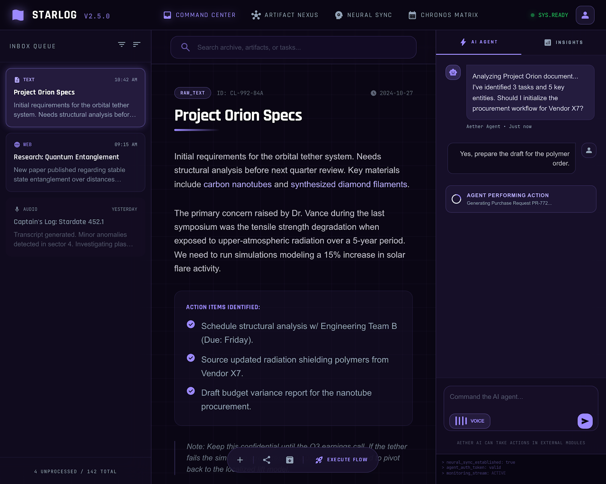
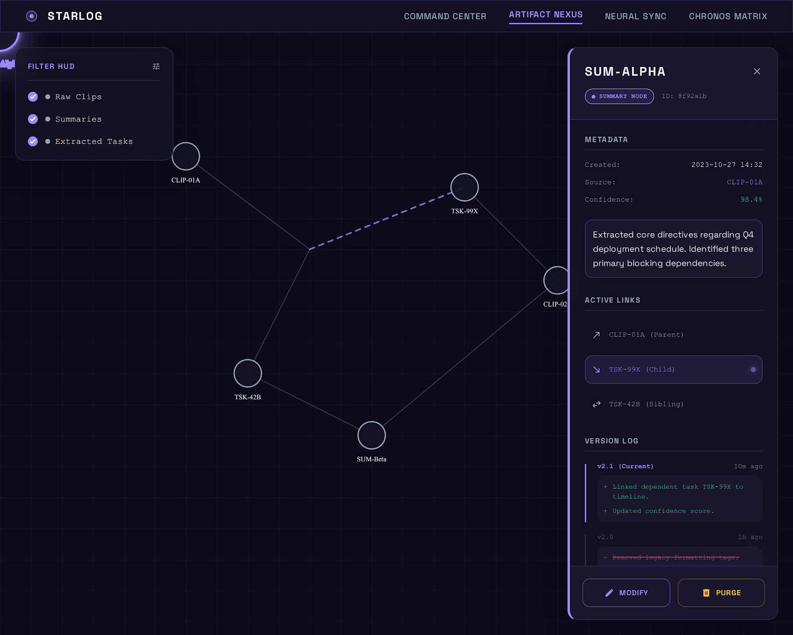

Transcript as command stream
Broad assistant blocks, denser user turns, and embedded action cards instead of generic admin tables.
The system should feel cinematic but disciplined: a conversation-first command environment with glass telemetry, teal-led trust cues, amber timing cues, and cards that read like deployable mission inserts.
Broad assistant blocks, denser user turns, and embedded action cards instead of generic admin tables.
Hold-to-talk should pulse with intent and spoken replies should read like short transmissions, not media players.
Research, briefings, and diagnostics orbit the chat thread instead of outranking it.



Long-form transcript, inline cards, deep editing.
Field communicator, alarms, hold-to-talk, offline playback.
Quick capture plus diagnostics and local bridge health.
You have one hard deadline at 14:00, a focused review window before lunch, and two CS papers worth a deeper read.
Two deployable cards with provenance, ranking context, and one confirmation-gated study block proposal.
Short reply mode. Interruptible. Transcript preserved.
7:00 alarm + spoken package. One tap to refresh, one press to speak, zero admin clutter.
Deep work block at 10:00. Prepare notes before the calendar turns dense.
Two paper cards are ready for triage. Swipe to save, speak to ask for a deeper summary.
A clipped article from desktop is waiting for note extraction and card generation.
The helper emphasizes relay state, provenance, and capture history instead of duplicating the full PWA navigation.
Bridge auth passed. Laptop-local voice path available. Spoken replies remain short and transcript-backed.